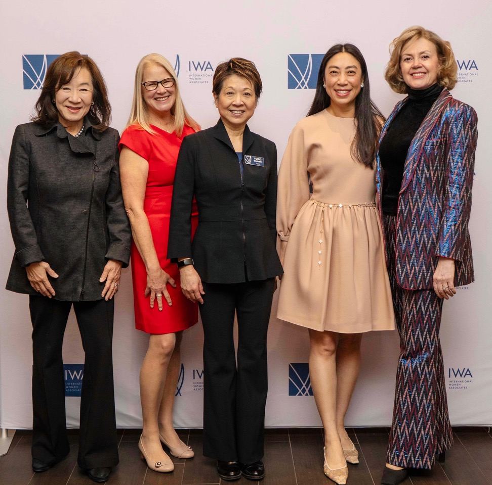
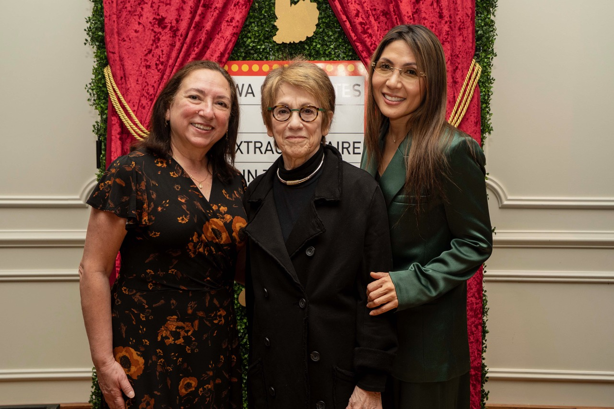
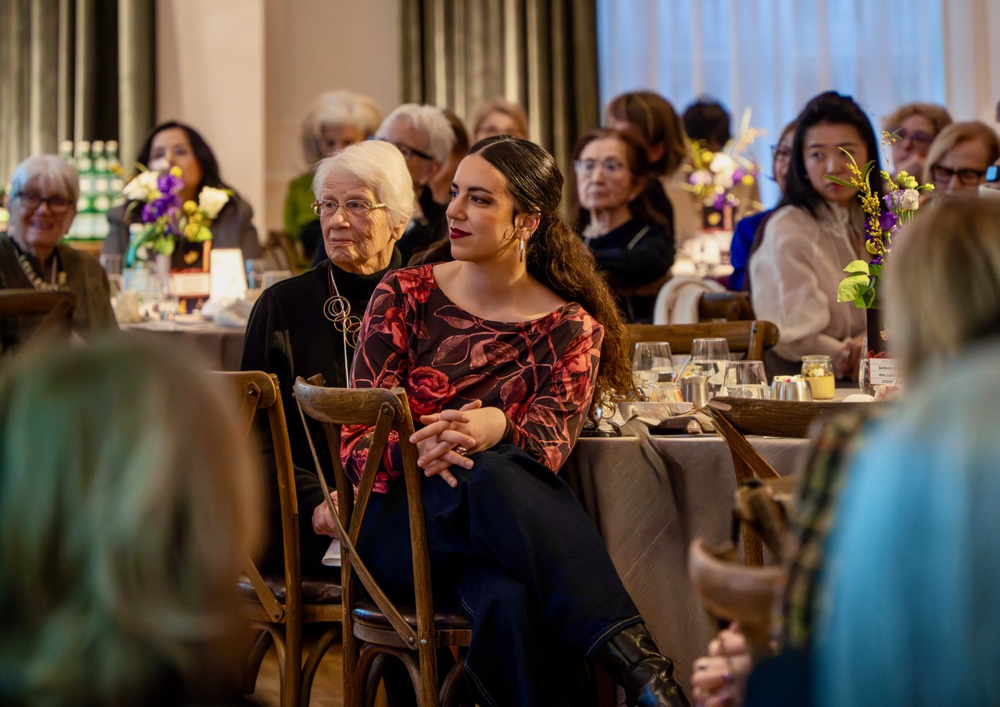
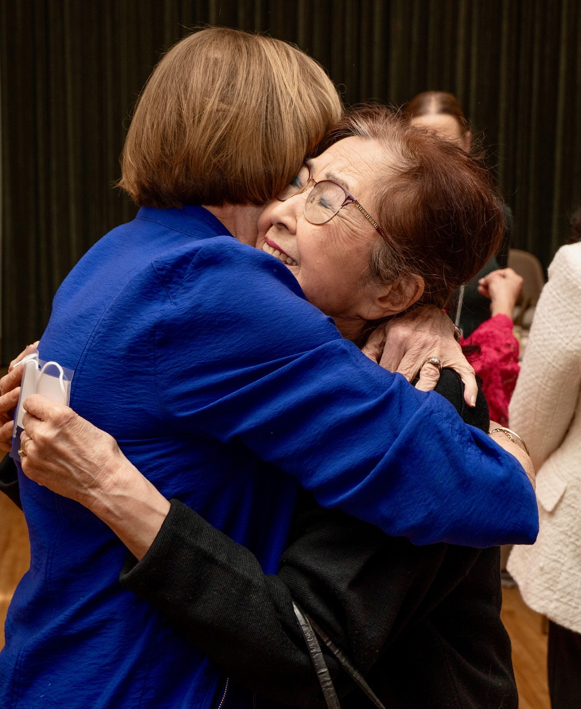

International Women Associates (IWA), a non-profit cultural and educational organization headquartered in Chicago, presented its annual Woman Extraordinaire Award (WEX) to three outstanding women leaders in Chicago’s art scene at its annual luncheon at the Ivy Room, supporting International Women’s Day.

Barbara Gaines, Founder and former Artistic Director of the Shakespeare Theater, Irma Suárez Ruiz, Artistic Director of Ensemble Español, and Josephine Lee, President and Artistic Director of Uniting Voices (formerly Chicago Children’s Choir) captivated the audience in a lively panel discussion about how they became interested in their art forms, their approach to addressing obstacles, and the moment they knew they had succeeded.

Gaines recalled dressing up in crinolines to belt out songs from South Pacific as a tiny child, Suárez Ruiz said she always wanted to dance and performed in white go-go boots in the third grade, and Lee recalled her first violin lesson at age four. They talked of miracles, sharing their vision, and the key to everything being the quality of the work.
Since 1996, IWA has presented a Woman Extraordinaire Award annually to a woman with ties to Chicago whose career advances the welfare of women and children and inspires constructive action by others. This was the first year that IWA chose to honor three women, and the panel discussion was well received.

IWA president Ying Hirsh commented: “For me, the panel discussion was the most powerful moment of the event. There was something truly special in the way they showed up, speaking with honesty, heart, and a strong sense of purpose. They were eloquent and passionate, but more than that, they were deeply authentic. Their energy drew the audience in, and you could feel the connection in the room. It was not just a conversation, it was a moment that stayed with people, and to me, that captured exactly what the event was meant to be.”

Ying noted that IWA fosters cross-cultural exchange, friendship, and philanthropy through educational programs and shared global experiences. “Upcoming programs include a private tour of the Halim Time and Glass Museum in Evanston and enjoying tapas and other delicacies at a renowned restaurant featuring the cuisine of the Mardin River area of Southeastern Anatolia.”

“IWA’s Philanthropy and Community Service initiative is particularly excited about our April 16 unveiling of a new mural celebrating diversity and global connection at the George B. Swift Specialty School in the Edgewater neighborhood. We have volunteered at the school for years, helping to fund poetry workshops for younger children, providing tutors and holding a free Book Fair for students. The mural was made possible through a legacy gift from the late Lynnette Gaza, an IWA member, and reflects the vibrant diversity of a school community where students speak more than 50 languages,” Ying said.

Created to support students through art and foster a welcoming environment, the mural highlights the many cultures and backgrounds represented within the school community. Through color and imagery, it serves as a daily reminder that Swift School is a place where students from around the world learn, grow, and belong together.

Students, school leadership, artists from the Art of Giving Foundation, and members of the International Women Associates will gather to celebrate the completed mural and honor the legacy of Lynnette Gaza. The ceremony will include brief remarks followed by a ribbon cutting in front of the mural. Alderwoman Leni Manaa-Hoppenworth of the 48th Ward will be in attendance to mark this special occasion.

To join IWA or learn more about the organization, please visit IWAchicago.org or call (312) 263-1421.